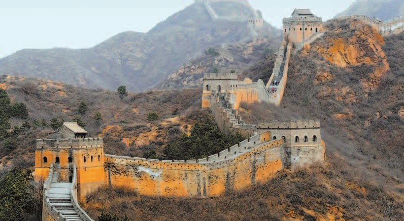
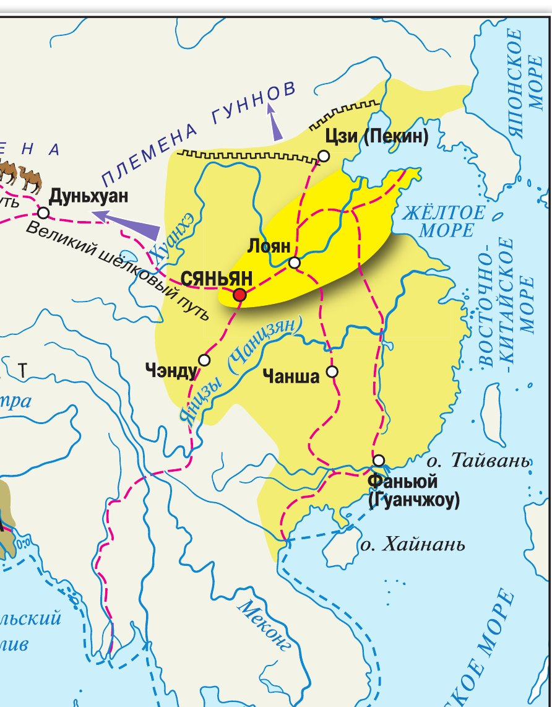
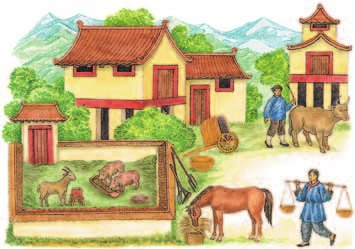
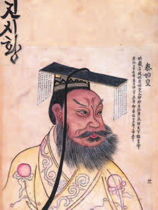
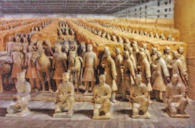

▲ Найди на карте Китай и отправную точку Великого шёлкового пути. Проследи его направление.
Население и хозяйство
Китай находится в Восточной Азии. В долине реки в первой половине 2-го тысячелетия до н. э. и сложился народ древних китайцев.
Почему именно там? Землю в долине Хуанхэ было легче обрабатывать, чем в долине , покрытой лесами. Но у этого места была своя цена. Хуанхэ часто выходила из берегов, меняла русло, затапливала селения и посевы — в Китае её называли .
До долины Янцзы китайцы добрались только в первой половине 1-го тысячелетия до н. э. — на тысячу лет позже.
Главным занятием населения было земледелие. Выращивали в основном рис. Чтобы поливать посевы и защищать их от разливов, строили .
Ещё в глубокой древности китайцы научились делать — и держали это знание в секрете. Торговля шёлком приносила огромные доходы, его покупали в разных странах.
Примерно в I (1) веке до н. э. возник караванный путь, по которому шёлк и другие товары отправляли в страны Запада. Его называют .
А в VI—V (6—5) веках до н. э. китайцы начали делать железные орудия труда и оружие.
Китай находится в Восточной Азии. В бассейне реки Хуанхэ в первой половине 2-го тысячелетия до н. э. сложилась общность (народность) древних китайцев. В отличие от долины реки Янцзы, покрытой лесами, земли долины Хуанхэ было легче обрабатывать, однако эта река часто выходила из берегов, меняла русло, затапливала селения и посевы. В Китае её называли «рекой тысячи бедствий». В первой половине 1-го тысячелетия до н. э. и в долине реки Янцзы обосновались древние китайцы.
Главным занятием населения Китая было земледелие. Для орошения посевов и их защиты от разливов реки местные жители строили дамбы и каналы. Выращивали в основном рис.
Ещё в глубокой древности китайцы научились производить шёлк и держали эти знания в секрете. Торговля шёлком приносила огромные доходы, его покупали в разных странах. Приблизительно в I (1) веке до н. э. возник караванный путь, по которому шёлк и другие товары отправляли в страны Запада. Этот маршрут называют Великим шёлковым путём.
В VI—V (6—5) веках до н. э. китайцы начали производить железные орудия труда и оружие.

▲ Расскажи о занятиях древних китайцев. Каких животных они использовали в своём хозяйстве?
- Какие занятия были распространены у древних китайцев?
- Найди и покажи на карте Китай и отправную точку Великого шёлкового пути. Проследи его направление.
1. Хуанхэ назвали «рекой тысячи бедствий» — и всё равно поселились именно на ней. Почему?
2. Дамбы и каналы делают сразу два дела. Какие — и почему их нельзя построить в одиночку?
3. Китайцы держали производство шёлка в секрете. Что им это дало?
Образование единого государства
Первое государство у древних китайцев возникло в начале 2-го тысячелетия до н. э. Позже царств стало много, и они воевали друг с другом.
Войны закончились объединением страны под властью правителя из царства Цинь. В 221 году до н. э. он провозгласил себя владыкой всего Китая — «первым властителем-императором династии Цинь». По-китайски это звучит .
Император часто ездил по стране, чтобы своими глазами смотреть, как исполняют его указы. Но он боялся покушений и приказывал направлять императорские повозки по разным дорогам. Никогда не было известно, в какой из них едет он сам. Его приезд всегда оказывался неожиданностью — и чиновники его боялись.
Он расправился со всеми противниками и ввёл . Даже за незначительное нарушение человека казнили или обращали в государственного раба вместе с роднёй. Население обложили большими налогами и повинностями.
Чтобы не было мятежей, Цинь Шихуанди переселил знатных людей завоёванных царств в свою столицу, под надзор чиновников. Оторванные от родных мест, они оказались в полной зависимости от него.
Империю разделили на во главе с наместниками. Границы областей намеренно провели так, чтобы они не совпадали с рубежами прежних царств.
Столицу император приказал отстроить заново, не жалея средств. Рядом с ней устроили огромный парк, где отдыхали и охотились он и его приближённые.
Простые китайцы трудились в мастерских, возделывали поля, ловили рыбу, добывали руду и минералы, строили дороги, мосты и укрепления. С высшими слоями общества они почти не встречались и относились к ним с почтением.
А ещё император приказал отобрать у всех подданных оружие — и переплавить его в самого себя.
Первое государство у древних китайцев возникло в начале 2-го тысячелетия до н. э. Позднее образовалось большое количество царств, враждовавших между собой. Войны завершились объединением страны под властью правителя Ин Чжэн царства Цинь. В 221 году до н. э. он провозгласил себя владыкой всего Китая, «первым властителем-императором династии Цинь», по-китайски — Цинь Шихуанди.
Император часто ездил по стране, чтобы собственными глазами посмотреть, как в разных частях империи исполняют его указы. Он боялся покушений на свою жизнь и в целях безопасности приказывал направлять императорские повозки по разным дорогам. Таким образом, никогда не было известно, в какой из них находится сам император. Его визит становился неожиданностью, что и устрашало чиновников.
Император расправился со всеми противниками и ввёл суровые законы. Даже за незначительное нарушение человека казнили или обращали в государственного раба вместе с его родственниками. Население империи обложили большими налогами и повинностями. Во избежание мятежей Цинь Шихуанди приказал переселить знатных людей завоёванных царств в свою столицу, под надзор своих чиновников. Оторванные от родных мест, они оказались в полной зависимости от него.
Империю разделили на области во главе с наместниками. Границы областей намеренно определили так, чтобы они не совпадали с рубежами прежних царств.
Цинь Шихуанди приказал заново отстроить столицу, не жалея средств. Рядом с ней устроили огромный парк, где отдыхали и охотились император и его приближённые.
Простые китайцы трудились в мастерских, возделывали поля, ловили рыбу в озёрах и реках, добывали руду и минералы, строили дороги, мосты и укрепления. Крестьяне и горожане редко встречались с высшими слоями общества и относились к ним с почтением. Осуществляя объединение государства, император приказал изъять у всех подданных оружие, из которого после переплавки отлили 12 огромных статуй правителя.

Смерть очень пугала императора, и страх смерти сделал его буквально одержимым идеей бессмертия. Лучшие лекари, учёные и даже колдуны предлагали ему разные «эликсиры бессмертия». В одной из экспедиций за бессмертием император тяжело заболел и умер.
Его похоронили в огромной со множеством комнат, однако долгое время гробница считалась утраченной.
В 1974 году археологи обнаружили несколько залов, в которых находилось 8 тысяч воинов: пехотинцы, лучники, кавалеристы, стрелки из арбалета. Все фигуры были созданы из обожжённой глины. Кисти рук, головы, причёски изготавливались отдельно и затем присоединялись к туловищу. Среди всех статуй воинов нельзя найти ни одного одинакового лица. Абсолютно все воины вооружены настоящим оружием, сделанным из бронзы. Эта находка получила известность как .

Император раздвинул границы державы на юг и на север. издавна совершали набеги на Китай. Потеснив их, Цинь Шихуанди приказал выстроить вдоль всей северной границы огромную оборонительную стену — .
Строили её 10 лет сотни тысяч работников. Длина стены составляла 4 тысячи километров (при последующих достройках — до 10 тысяч). По всей длине стояли сторожевые башни. Высота доходила до 10 метров, а ширина позволяла разъехаться двум конным повозкам.
Император раздвинул границы державы на юг и на север. Северные кочевые племена издавна совершали набеги на территорию Китая. Потеснив их, Цинь Шихуанди приказал выстроить огромную оборонительную стену вдоль всей северной границы. Её называют Великой Китайской стеной. Строили её 10 лет сотни тысяч работников. Длина Великой Китайской стены составляла 4 тысячи километров (при последующих достройках — до 10 тысяч километров), на всём её протяжении были возведены сторожевые башни. Высота стены достигала 10 метров, ширина позволяла разъехаться двум конным повозкам.
- Подумай, зачем Цинь Шихуанди велел провести границы областей так, чтобы они не совпадали с границами прежних царств.
4. Император боялся покушений — и ездил сразу несколькими повозками. Но учебник говорит, что от этого выиграло и управление страной. Как?
5. Зачем переселять знать завоёванных царств в столицу, если можно было просто её казнить?
6. Оружие отобрали и перелили в 12 статуй самого императора. Почему именно в статуи, а не, скажем, в плуги?
7. «Терракотовая армия» — 8 тысяч глиняных воинов, и среди них нет ни одного одинакового лица. Что это говорит о работе мастеров?
Империя Хань
Жестокость циньских законов, тяжесть податей и повинностей, гибель десятков тысяч людей на стройках истощили страну. После смерти Цинь Шихуанди в 210 году до н. э. начались восстания. Повстанцы отменили прежние законы и освободили государственных рабов.
Один из отрядов возглавил — деревенский староста, сельский чиновник из крестьян.
Лю Бан восстановил местную власть, вернул землю и жилища прежним обладателям, отменил жестокие наказания, ввёл новый кодекс законов, распустил армию и позволил солдатам вернуться к сельскому хозяйству.
Постепенно побеждая войска Цинь и других повстанцев, в 202 году до н. э. Лю Бан подчинил весь Китай. Он снова собрал страну в единую империю и объявил себя основателем новой династии — . Империя Хань просуществовала до III (3) века н. э.
Пик её могущества пришёлся на правление (141—87 годы до н. э.). Он сильно расширил территорию империи и провёл важные реформы в государственной религии, хозяйстве и налогах.
Империя Хань сильно повлияла на культуру, политику и хозяйство всего края. Это было время расцвета науки, литературы, философии, искусства и торговли. Идеи стали основой правления и образования и во многом сложили моральные ценности общества.
В конце 220 года последнего императора, , низложили — и империя Хань прекратила своё существование.
Жестокость циньских законов, тяжесть податей и повинностей, гибель десятков тысяч людей на строительных работах истощали страну. После смерти в 210 году до н. э. Цинь Шихуанди начались восстания. Повстанцы отменили прежние законы и освободили государственных рабов.
Один из отрядов повстанцев возглавил деревенский староста Лю Бан — сельский чиновник из крестьян. Лю Бан восстановил местную администрацию, вернул землю и жилища их прежним обладателям, отменил жестокие наказания, ввёл новый кодекс законов, распустил армию и позволил солдатам вернуться к занятиям сельским хозяйством.
Постепенно побеждая силы Цинь и других повстанцев, Лю Бан подчинил в 202 году до н. э. весь Китай. Он воссоздал в стране единую империю и провозгласил себя основателем новой династии Хань. Империя Хань существовала до III (3) века н. э. Пик могущества Хань пришёлся на время правления Лю Чэ (141—87 до н. э.). Он значительно расширил территорию империи, а также провёл ряд важных реформ в области государственной религии и идеологии, экономики и налогообложения.
Империя Хань оказала огромное влияние на культуру, политику и экономику региона. Она процветала благодаря периоду расцвета науки, литературы, философии, искусства и торговли. Философские идеи конфуцианства стали основой правления и образования, а также сыграли важную роль в формировании моральных ценностей общества.
В конце 220 года был низложен последний император династии Сянь-ди, империя Хань прекратила своё существование.
- Что привело к гибели империи Цинь?
8. Лю Бан был деревенским старостой. Почему именно такой человек смог собрать Китай заново?
9. Цинь Шихуанди отобрал оружие, а Лю Бан распустил армию. Оба остались без вооружённых людей — но результат вышел разный. Почему?
10. Империя Хань стояла больше четырёх веков и прославилась расцветом наук и искусств. При чём тут отмена жестоких законов?
11. Вспомни §17: держава Маурьев распалась вскоре после смерти Ашоки. А империя Цинь — вскоре после смерти Цинь Шихуанди. Что общего у этих двух историй?
Подведём итоги
- Подумай, почему долгое время первые государства Китая были разобщены.
- Как первый император Китая Цинь Шихуанди смог объединить воевавшие между собой царства в единую империю?
- Кто основал империю Хань и при каких обстоятельствах?
- Вспомни и сравни правителей других стран Древнего Востока с китайскими. Что у них общего?
- Проанализируй карту и ответь, с кем вёл борьбу Китай в древности. Откуда Китаю угрожала внешняя опасность? Какие меры предприняли китайские правители для своей защиты?
Сформулируй ответ на главный вопрос параграфа — кто создал единое государство в Китае? Приведи два-три довода.
Проверь себя
Нажимай по очереди — от самого древнего события к самому близкому к нам.
1. В долине какой реки сложился народ древних китайцев?
2. Что китайцы держали в секрете?
3. В каком году Цинь Шихуанди провозгласил себя владыкой всего Китая?
4. Зачем границы новых областей провели не по старым рубежам?
5. Сколько строили Великую Китайскую стену при Цинь Шихуанди?
6. Кем был Лю Бан до того, как стал императором?
Расскажи вслух
Где и как жили древние китайцы
- Восточная Азия; в долине Хуанхэ в первой половине 2-го тыс. до н. э. сложился народ китайцев, в долине Янцзы — на тысячу лет позже.
- Хуанхэ — «река тысячи бедствий»: выходит из берегов, меняет русло, топит селения; строили дамбы и каналы.
- Главное занятие — земледелие, в основном рис; с VI—V веков до н. э. — железные орудия и оружие.
Шёлк и Великий шёлковый путь
- Делать шёлк научились ещё в глубокой древности и держали это в секрете.
- Торговля шёлком приносила огромные доходы, его покупали в разных странах.
- Примерно в I веке до н. э. возник караванный путь на Запад — Великий шёлковый путь.
Цинь Шихуанди
- 221 год до н. э.: Ин Чжэн из царства Цинь объединил страну и стал «первым властителем-императором».
- Суровые законы, большие налоги, знать переселена в столицу, области с новыми границами, оружие переплавлено в 12 статуй.
- Раздвинул границы на юг и север; 10 лет и сотни тысяч работников строили Великую стену: 4 тысячи километров, высота 10 метров, сторожевые башни.
Гробница и «терракотовая армия»
- Император боялся смерти и искал эликсир бессмертия; в одной из экспедиций заболел и умер.
- Похоронен в огромной гробнице со множеством комнат, которая долго считалась утраченной.
- 1974 год: нашли залы с 8 тысячами глиняных воинов — пехота, лучники, кавалеристы, арбалетчики; одинаковых лиц нет, оружие настоящее, бронзовое.
Империя Хань
- Страна истощилась, после смерти Цинь Шихуанди в 210 году до н. э. начались восстания.
- Лю Бан, деревенский староста из крестьян, вернул землю и жилища, отменил жестокие наказания, распустил армию; в 202 году до н. э. подчинил весь Китай.
- Пик — при Лю Чэ (141—87 до н. э.); расцвет науки и искусства, конфуцианство как основа правления; в конце 220 года низложен Сянь-ди, и империя кончилась.